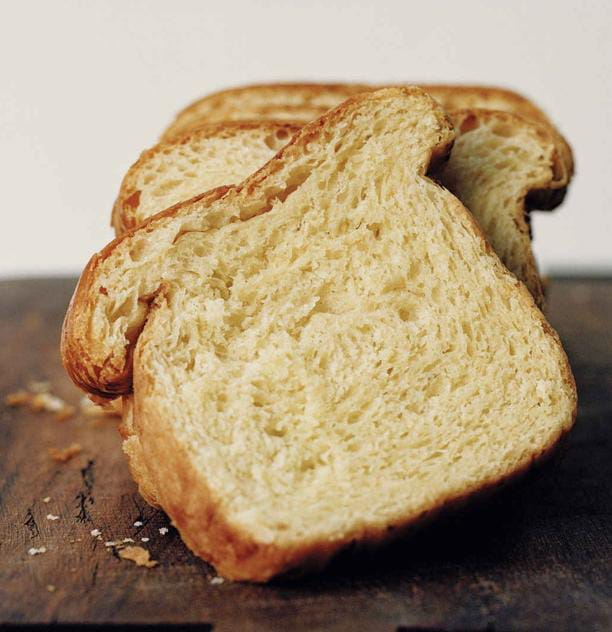

Ingretientes
500 g de farinha de trigo, mais o suficiente para polvilhar.
60 g de açúcar
25 g de fermento biológico
25 ml de leite, mais 3 colheres de sopa para pincelar
10 g de sal fino
5 ovos de galinha
350 g de manteiga fria, mais o suficiente para untar
1 gema do ovo da mesma galinha.
Modo de Preparo
modo de preparo
É preciso uma batedeira com gancho amassador.
Em uma tigela coloque a farinha, o açúcar, o fermento e o leite.
Bata com o gancho da batedeira em velocidade baixa por 30 segundos. Incorpore o sal e os ovos, um a um, até formar uma massa homogênea.
Não pare de bater, sempre em velocidade baixa.
Acrescente aos poucos a manteiga cortada em lascas. É muito importante que a manteiga esteja fria.
Continue batendo até a massa dar liga e se soltar das bordas da tigela Parece que não, mas ela ficará homogênea. retire a massa.
Cubra com pano úmido e deixe descansar na geladeira por pelo menos 4 horas. Melhor ainda de um dia para o outro.
Unte com manteiga e farinha uma fôrma retangular de 10 cm x 30 cm, com 10 cm de altura.
Coloque a massa na fôrma e deixe crescer por cerca de 2 horas. Pincele a massa com uma mistura de 1 gema e 3 colheres de sopa de leite, para dar brilho e cor.
Asse em forno preaquecido a 170 °C por 30 minutos.
Data: 23/03/2023
Autor: Marina Elis de Morais
Categoria: Gastronomia